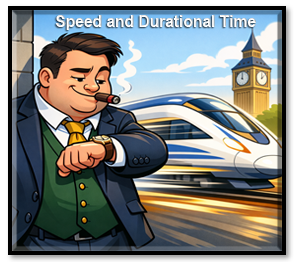
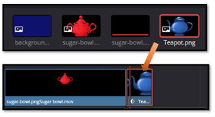
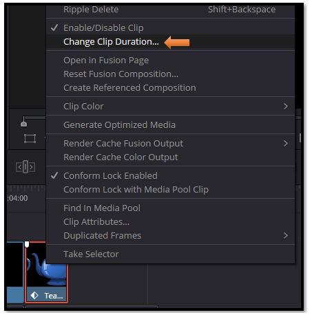
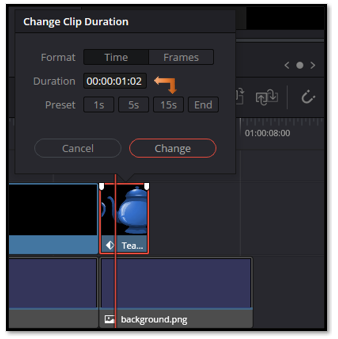
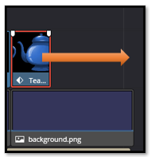
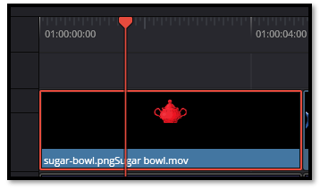
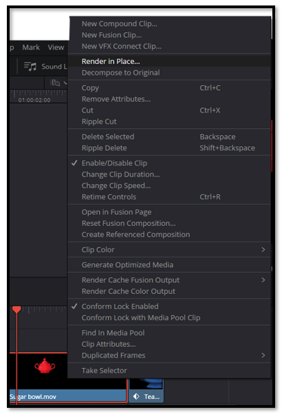
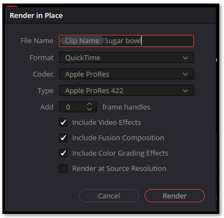
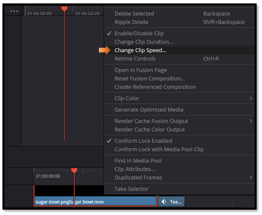

~10 How to Change Clip Speed and Duration in DaVinci Resolve~
8/3/2026

Duration changes how long the clip stays on screen. Speed changes how fast the clip plays.
Changing Duration
Changing the time that a clip runs, is called duration. Now this is very easy to do in the Edit Panel, just put your clip on the timeline.

Right click on the clip you want to change, to bring up the context menu. Then just choose, Change Clip Duration.

You can either change the duration to a very specific time, or choose a preset setting.

Adding Duration time, can also be done by just stretching out the clip on the timeline, and this will also slow down the speed of a clip.

Changing Time
Changing time is not given to us in the right click menu, until you have an actual movie clip. This means it needs to be rendered. We can take a clip and actually render an animated clip right on the time line. My sugar bowl has been animated by placing movement and marking those movements with key frames in the Inspector.
Speed controls only appear on clips that have been rendered, and contain actual video frames. Just setting a few keyframes on a clip with some movement, will make the element appear to move, but you do not have actual video frames until a clip has been rendered, and turned into a real movie clip.

Render a Clip in Place
Right click on the clip of the sugar bowl on the timeline. Choose to Render in Place.

Now you will see this next dialog box pop up. Give the clip a name, and use Apple Quicktime. This format works best for a clip that is being rendered right on the timeline. Hit the Render button at the bottom to render the movie. When you do your actual final render of the movie, you will probably want to use MP4 instead for the Format type.

Then you can choose to change the speed

Understanding the difference between duration and speed gives you a lot more control over how your clips behave on the timeline. Duration can be changed on anything, but speed changes only appear once a clip contains real video frames. So, if you’ve animated something like a Text+ or a PNG, just render it in place first, and Resolve will treat it like any other video clip. Once you know this little workflow trick, adjusting timing becomes simple and predictable, and you can shape your edits exactly the way you want.